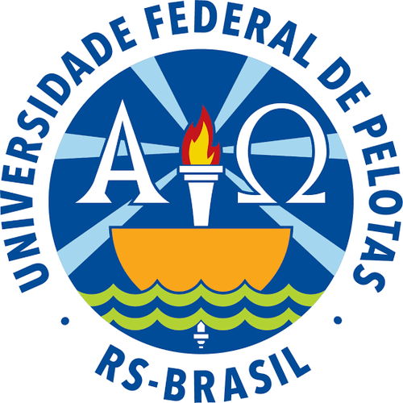
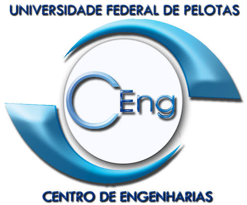
Professor do Magistério Superior — Centro de Engenharias, Universidade Federal de Pelotas. Memorial apresentado como parte do processo de progressão à classe de Professor Titular.
Processo nº 23110.017596/2026-82 — defesa marcada para 07 de agosto de 2026.
Horário e local a confirmar.
Este memorial reúne uma trajetória acadêmica construída ao longo de mais de três décadas — iniciada no Uruguai, consolidada na pós-graduação da UFSC e nos Estados Unidos, e amadurecida nos últimos 16 anos na Universidade Federal de Pelotas. É também o relato de uma convicção pessoal, presente desde a adolescência: a de que quem recebe muitas oportunidades carrega a responsabilidade de transformá-las em oportunidades para outros.
Vindo de uma formação inicialmente voltada à pós-graduação e à pesquisa, encontrei na graduação — primeiro em Joinville, depois na UFPel — um espaço decisivo de formação humana, técnica e profissional. É esse deslocamento, da pesquisa de fronteira para a sala de aula da graduação, que atravessa todo este memorial.
Formação escolar no Instituto Crandon, em Montevidéu; graduação em Engenharia Industrial (opção Mecânica) na Universidad de la República; e uma pós-graduação que o levou a estudar lógica difusa e sistemas inteligentes "artesanalmente" — livro na mesa, lápis na mão — numa época em que a IA ainda não fazia o resumo por ninguém.
Professor de Engenharia de Computação — Cálculo III, Pesquisa Operacional, Engenharia Econômica — em paralelo à pós-graduação no PPGEP-UFSC.
Entre 1997 e 2004, integrou equipes que desenvolveram cerca de 38 sistemas e protótipos computacionais (IA aplicada, EAD, gestão do conhecimento).
Environmental Auditor Training Course, Quality Management Institute (Canadá) — base para a integração entre engenharia, qualidade e sustentabilidade.
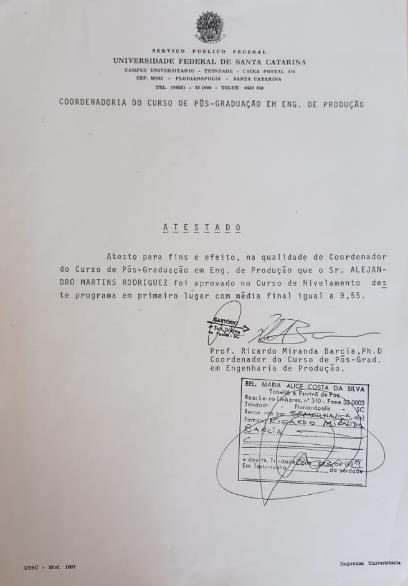
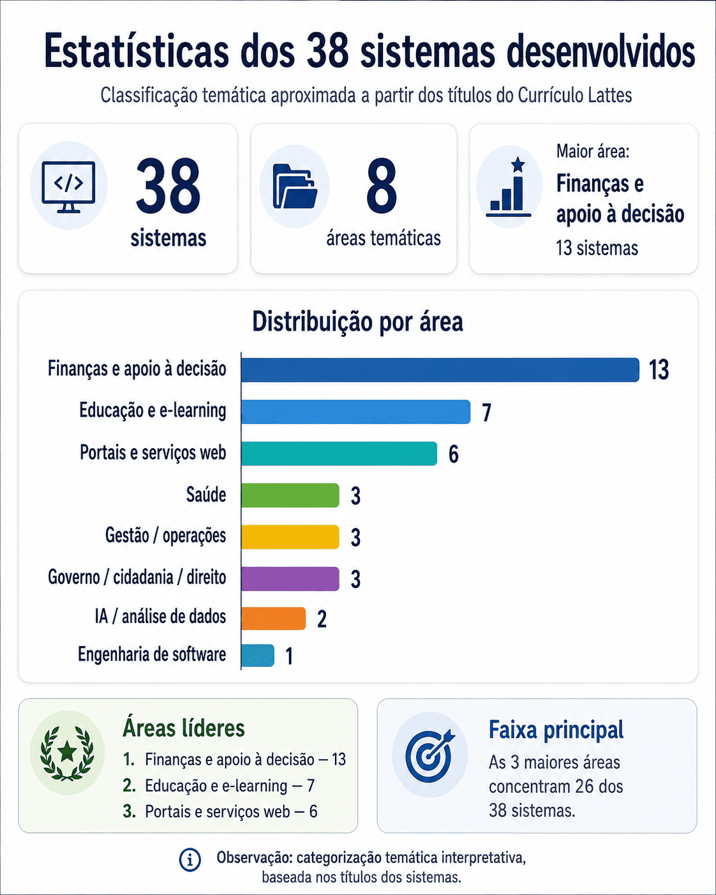
A maior concentração de orientações ocorreu no vínculo com os programas de pós-graduação da UFSC — Engenharia de Produção e Engenharia e Gestão do Conhecimento. Na UFPel, a atuação se concentrou na graduação em Engenharia de Produção, como orientador de TCC e membro avaliador de bancas.
A estratégia de "apresentação por perguntas", consolidada nos últimos cinco anos, transforma o estudante de ouvinte em quem formula, pesquisa, organiza e defende uma resposta. A interdisciplinaridade — sobretudo no UFPel Rocket Team — cria uma "entropia de saberes" entre Produção, Controle e Automação, Computação, Design e Relações Internacionais.
Esse tripé pedagógico — curiosidade que abre portas, liberdade que as mantém abertas, evidência que disciplina o percurso — orienta também o uso crítico da inteligência artificial em sala de aula: a IA eleva a exigência, não substitui o raciocínio.
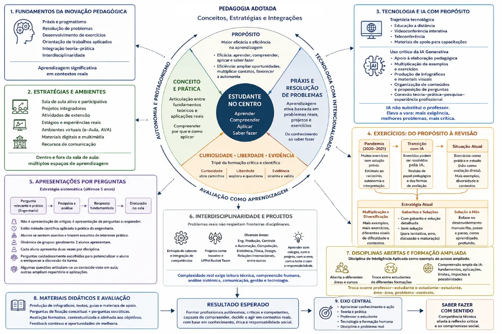
A literatura em educação em engenharia mostra que equipes de competição funcionam como um espaço privilegiado de "aprendizagem situada", entrelaçando o saber teórico ao fazer prático (Sant'Anna & Versiani, 2019). Estudos sobre competições estudantis (Formula SAE, Motostudent) descrevem esses projetos como o "playground ideal" da aprendizagem experiencial de Kolb: objetivos abertos e multidisciplinares, prazos e regulamentos reais, feedback de especialistas da indústria e forte engajamento motivacional (Frizziero et al., 2018, SAGE — Journal of Engineering Education).
Organizações estudantis técnicas (TSROs) — como o UFPel Rocket Team — também são apontadas como ambiente privilegiado para o desenvolvimento de competências transversais: liderança, comunicação, gestão de projetos e colaboração interdisciplinar, com aprendizagem entre pares e mentoria de veteranos a calouros (Thomson, 2024, SEFI/JEEA). Pesquisas com equipes brasileiras (Nisus Aerodesign/UFSC, equipes da UFF) reforçam que, ao lado das competências técnicas, as competições desenvolvem soft skills — comunicação, trabalho em equipe, liderança e comprometimento — reconhecidas como diferencial para o mercado de trabalho.
É nesse sentido que a participação em competições — com metas concretas, organização de equipe, resolução prática de problemas e integração com times de outras instituições do país e do exterior — funciona como extensão natural da sala de aula, caso da Missão Netuno, do UFPel Rocket Team, no LASC 2025 (Latin American Space Challenge).
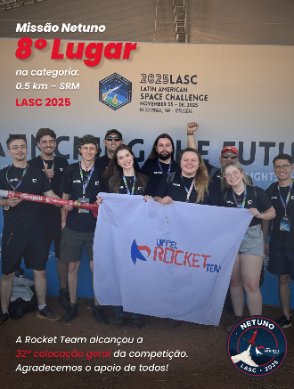
Relação extraída dos Relatórios de Atividade Acadêmica Docente (RAAD) da UFPel. Gestão da Manutenção, Projeto Integrador e Fenômenos de Transporte são as disciplinas mais recorrentes — um portfólio que evoluiu da base clássica da engenharia (2015–16) até a abertura recente para Inteligência Artificial Aplicada (2025).
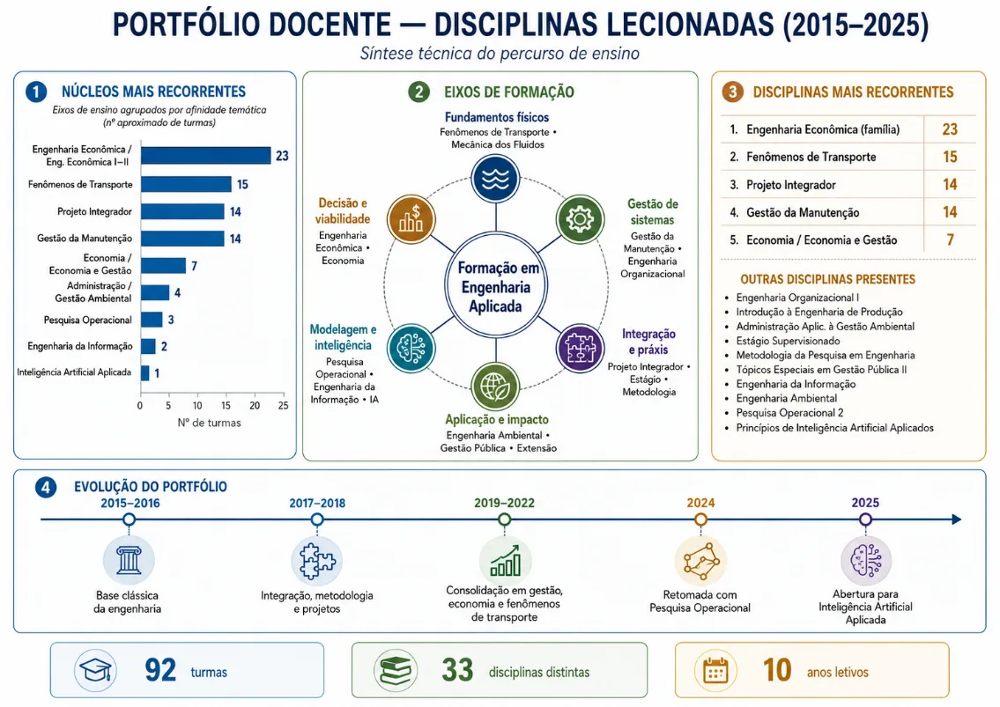
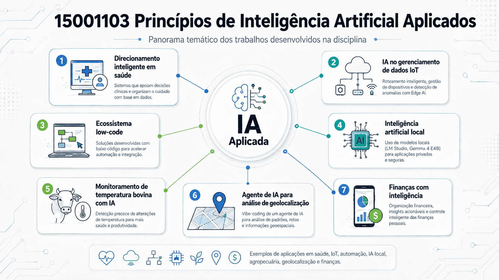
Oito projetos de ensino ativos, da permanência estudantil ao UFPel Rocket Team 2.0. No bom português do próprio memorial: "menos ensino de vitrine e mais ensino com graxa na mão".
30h/semana. Combate à evasão e retenção no curso de Engenharia de Produção.
Coordenação. Minifoguetes, design thinking e times multidisciplinares.
Combate à reprovação e evasão via monitores sob orientação docente.
Estudo do perfil profissional de engenheiros formados pela UFPel.
Ergonomia, segurança e acessibilidade em espaço laboratorial aplicado.
13h/semana. Ações preparatórias e simulados para os concluintes.
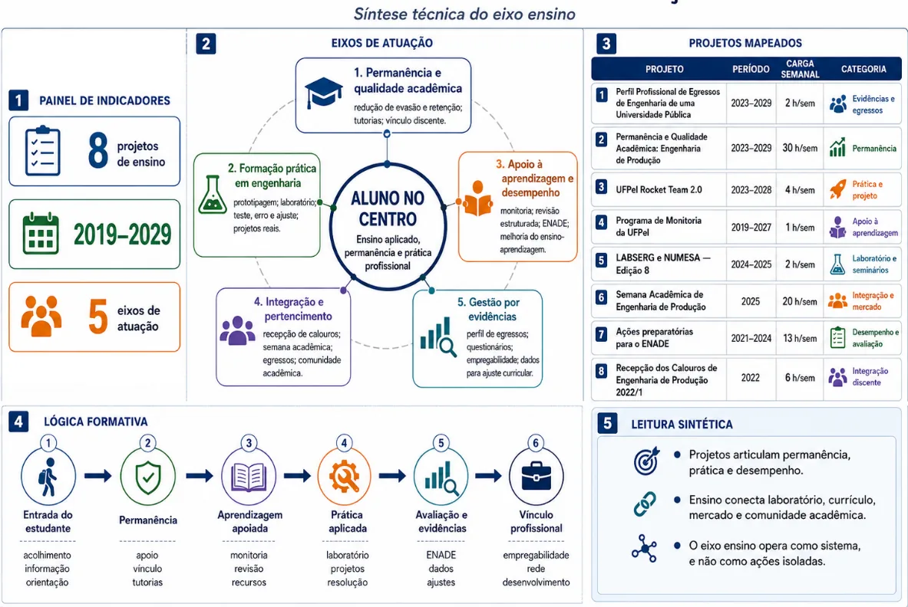
Da tese sobre sistemas inteligentes na análise financeira (1994) ao livro Descomplicando a Inteligência Artificial (UDESC, 2026) — escrito ao lado de dois ex-orientandos de doutorado — a produção fecha um ciclo: estudar, formar, produzir e devolver conhecimento em linguagem acessível a novas gerações.
Publicações em periódicos indexados como Technometrics e International Journal of Intelligent Systems, e capítulos em Springer-Verlag e Kluwer Academic Publishers.
Em 2026, uma nova tese de doutorado se soma à trajetória: BRESQUE, Milton Luis Rodrigues. Estudio sobre la implantación de la Administración Electrónica en la tramitación de documentos administrativos y su incidencia en la mejora de la gestión universitaria. 2026. 203 f. Tese (Doutorado em Mundo Hispánico: Raíces, Desarrollo y Proyección) — Universidad de León, León, 2026.
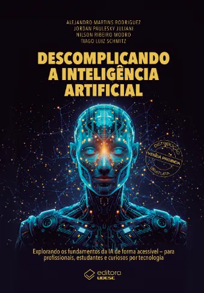
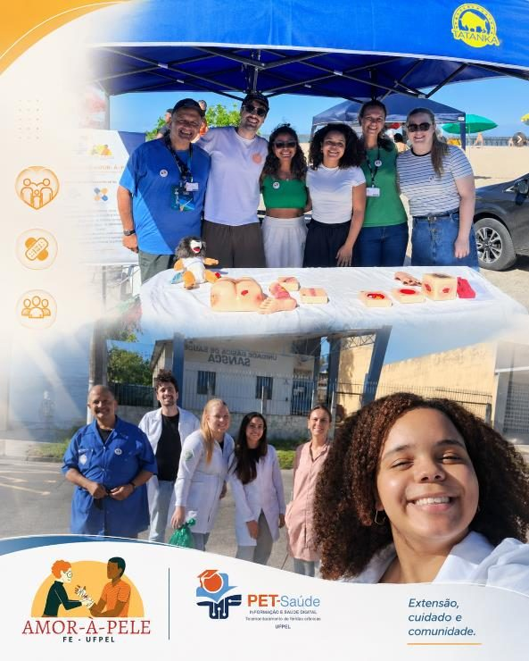
Nos últimos anos, a extensão ganhou centralidade crescente — especialmente no PET-Saúde G10 e no Amor-à-Pele, cuidado integral de pessoas com feridas crônicas na rede de saúde de Pelotas, onde atua como tutor tecnológico.
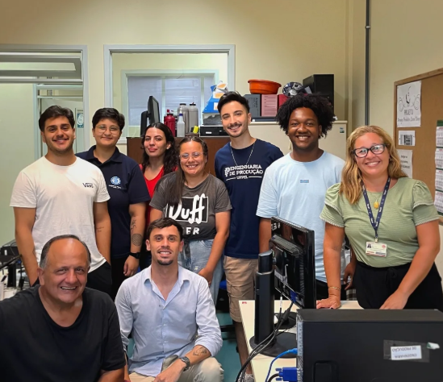
Em 2026, o trabalho de desenvolvimento de sistemas foi intensificado, em particular no PET-Saúde G10 — Telemonitoramento de Feridas Crônicas —, onde atuo como tutor de tecnologia. No projeto há incorporação de inteligência artificial aplicada (IA generativa, embeddings, agentes) à rotina de extensão. Ver @petsaude.g10.ufpel no Instagram, e no caso aqui, a página operacional
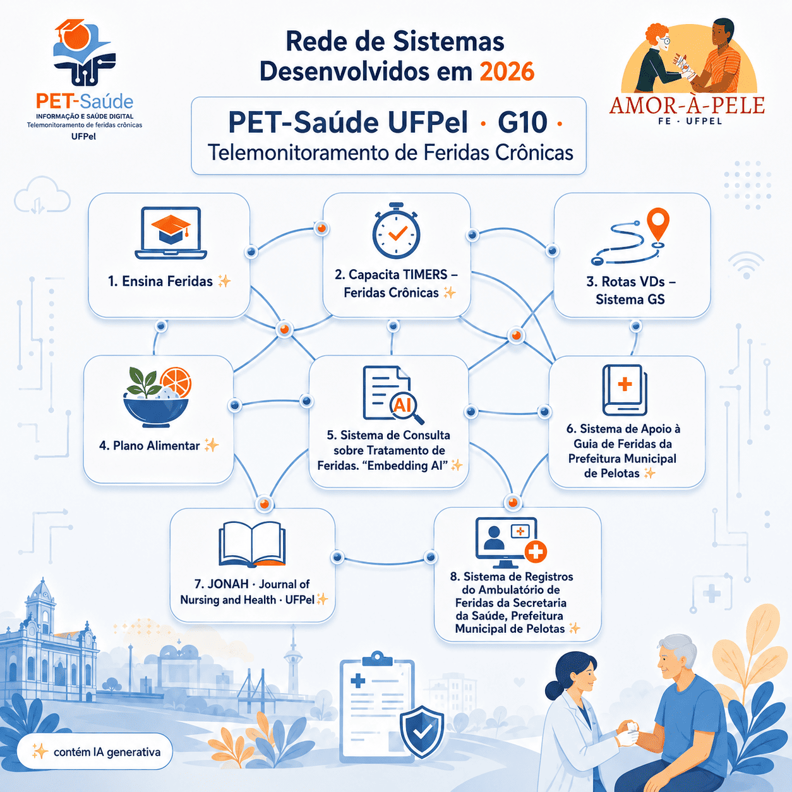
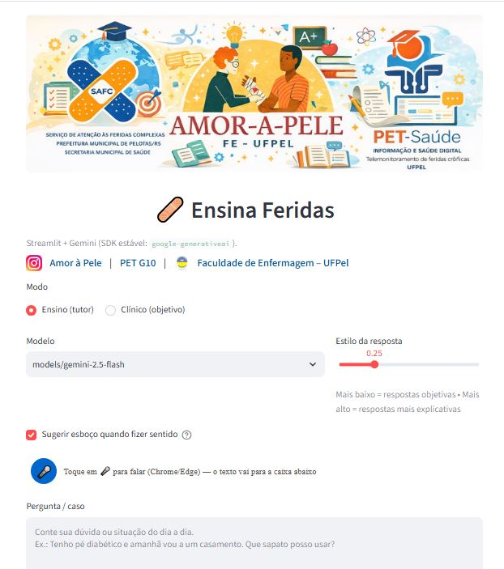
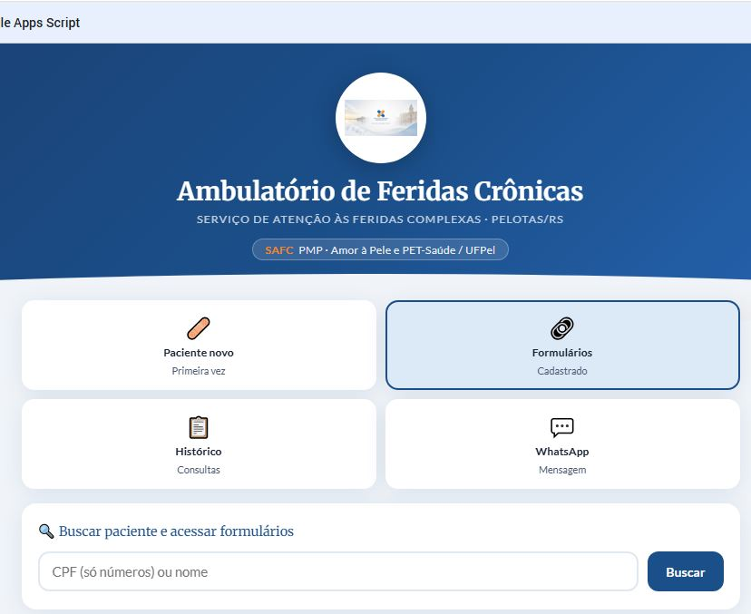
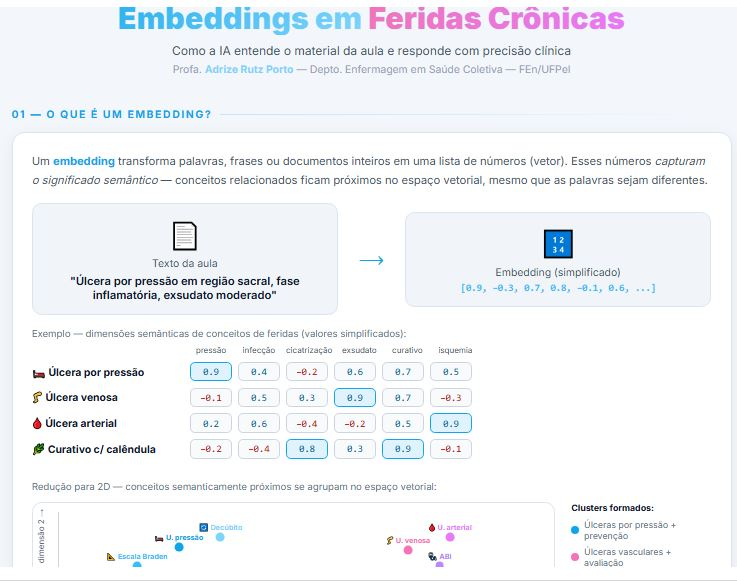
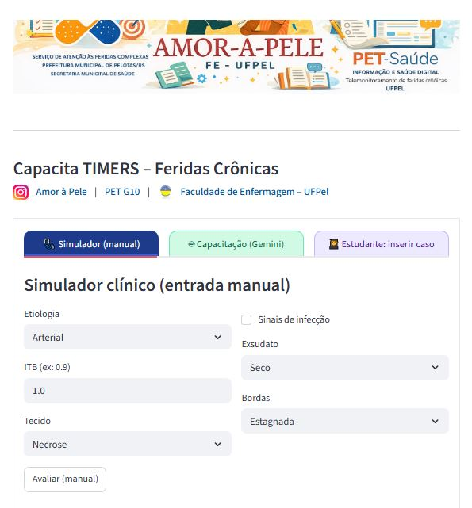
Três projetos de pesquisa em andamento, com forte aderência à Engenharia de Produção aplicada: qualidade em serviços, Indústria 4.0 na região Sul do RS, e digitalização do gerenciamento diário (Lean Manufacturing) em uma linha de transmissão de máquinas agrícolas.
Modelos Kano, SERVQUAL e SERVPERF aplicados a estabelecimentos parceiros.
Desafios e perspectivas da digitalização, IoT e manufatura aditiva na região.
Lean Manufacturing e Business Intelligence em máquinas agrícolas.
Iniciado em 2017 e retomado em 2023 como Rocket Team 2.0, o projeto reúne estudantes de Produção, Controle e Automação, Computação, Eletrônica, Design e Relações Internacionais em torno de minifoguetes reais: calcular, construir, testar, errar, corrigir e lançar — literalmente.
Em 2024, a liderança se estendeu a um campo inesperado: o projeto Reconstruindo Lares, reparando eletrodomésticos de famílias atingidas pela enchente de maio de 2024 no RS — 101 equipamentos recuperados em seis meses de oficina.
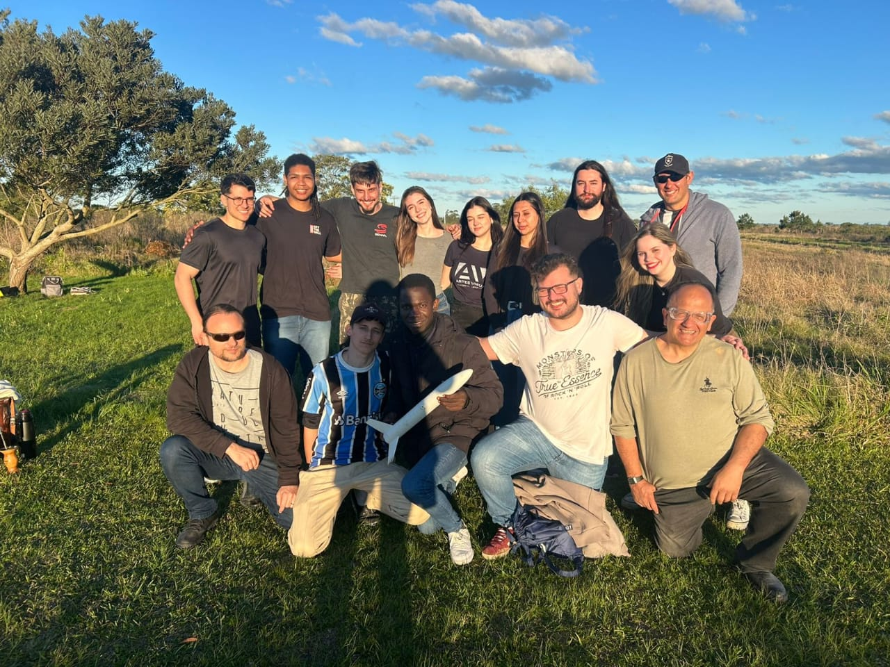
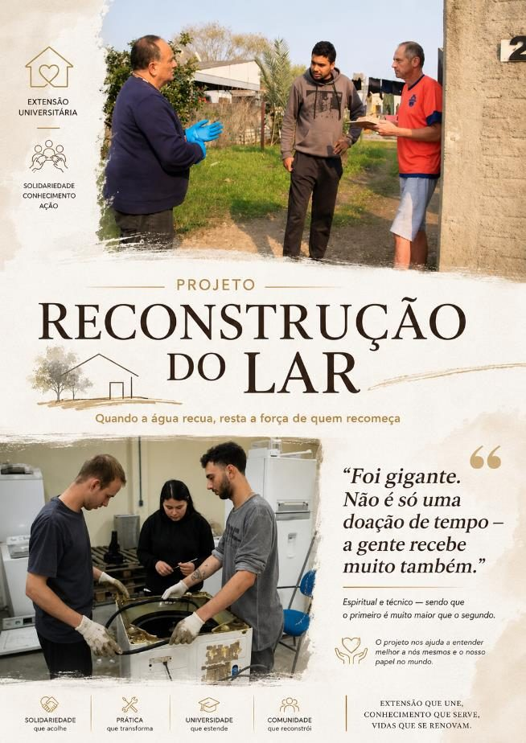
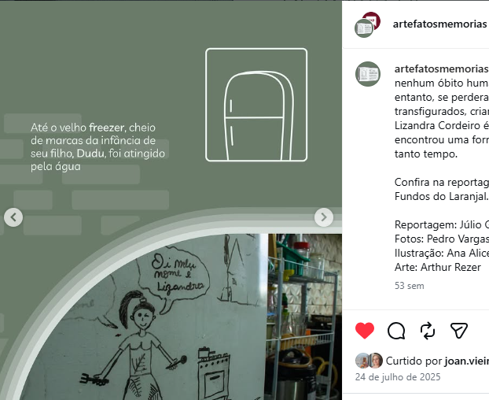
Coordenação do Curso de Engenharia de Produção do Centro de Engenharias, de forma contínua, entre 12 de dezembro de 2011 e 9 de julho de 2017 — fase de consolidação acadêmica e administrativa do curso.
| Início | Término | Duração |
|---|---|---|
| 12 de dezembro de 2011 | 09 de julho de 2017 | 5 anos e 7 meses |
37 bancas de mestrado, 9 de doutorado e 8 de qualificação de doutorado — a maior parte no período de vínculo com a UFSC. Como evidência complementar, o Repositório Institucional da UFSC retorna mais de 200 resultados para o nome do autor na comunidade de Teses e Dissertações.
Como esses registros nem sempre estão disponíveis de forma individualizada, o memorial anexa um dossiê digitalizado com 62 páginas de declarações emitidas pela Secretaria da UFSC.
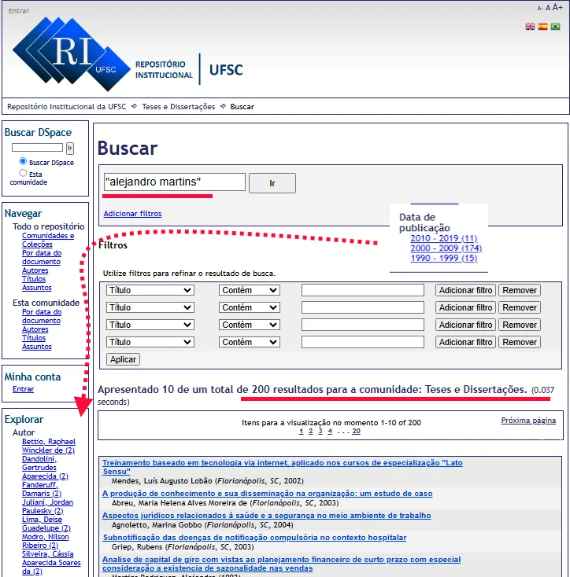
Quatro concursos públicos entre 2018 e 2024 — em dois deles, na função de Presidente da Banca Examinadora.
| Ano | Instituição | Função | Área |
|---|---|---|---|
| 2018 | UNIPAMPA | Membro Titular | Concurso público (7,17h) |
| 2019 | UFSM | Presidente de Banca | Engenharia de Produção / Gerência de Produção |
| 2023 | UFPel | Presidente de Banca | Engenharias I — Área Hídrica |
| 2023–2024 | FURG | Membro Titular | Engenharia de Produção |
Da concepção estratégica à execução operacional, a participação em eventos acompanha cada projeto: semanas acadêmicas do curso de Engenharia de Produção, demonstrações do UFPel Rocket Team, ações do Minifoguetes em Ação, e atividades do PET-Saúde G10 e Amor à Pele — sempre como forma de aproximar a universidade da comunidade.
IA e Indústria 4.0 moldando o mundo — Semana Acadêmica UFPel e IF Sul.
Diálogo em evento da área de Enfermagem, UFPel.
NUGEPRO/UFPel — Engenharia de Produção como integração de saberes.
Convite da Universidade Católica de Pelotas.
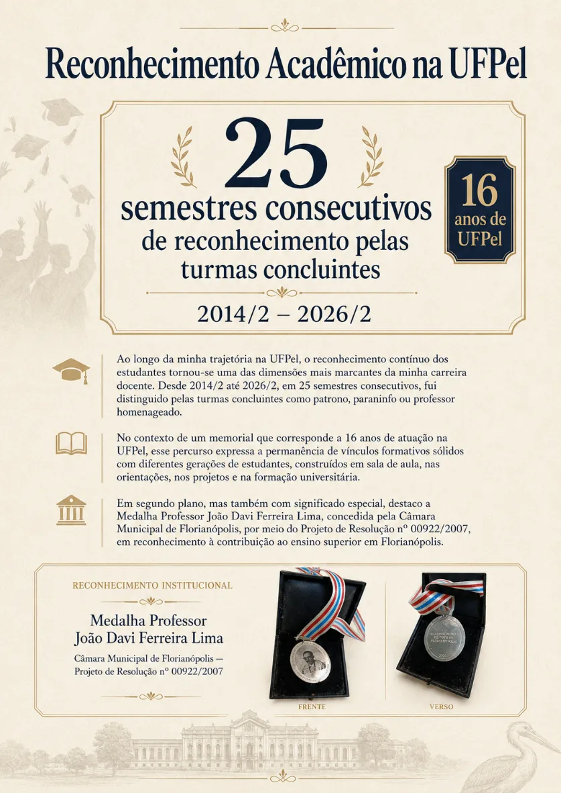
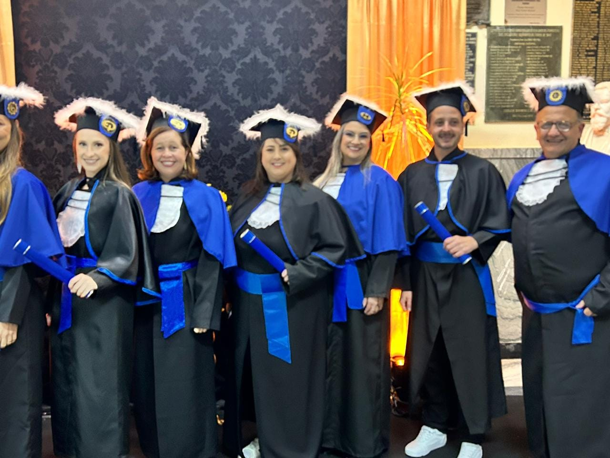
Desde 2014/2 até 2026/2, em 25 semestres consecutivos, foi distinguido pelas turmas concluintes como patrono, paraninfo ou professor homenageado — sem uma única exceção.
Em segundo plano, mas com significado especial: a Medalha Professor João Davi Ferreira Lima, concedida pela Câmara Municipal de Florianópolis (Projeto de Resolução nº 00922/2007), reconhecendo a contribuição ao ensino superior antes mesmo da chegada à UFPel.
Avaliador da revista Gestão & Produção (UFSCar) e atuação ativa na Revista Prociências da UFPel — incentivando a publicação de TCCs e trabalhos de projetos como etapa de amadurecimento acadêmico, não apenas registro final.
Desde antes do SINAES (2004), atua como avaliador de cursos de graduação junto ao INEP/e-MEC, sobretudo em Engenharia Mecânica, em instituições de todas as regiões do país — de universidades federais a centros universitários privados.
UFSCar, desde 2009.
UFPel — articulação com autores e incentivo à submissão.
Autorização, reconhecimento e renovação de cursos, desde antes de 2004.
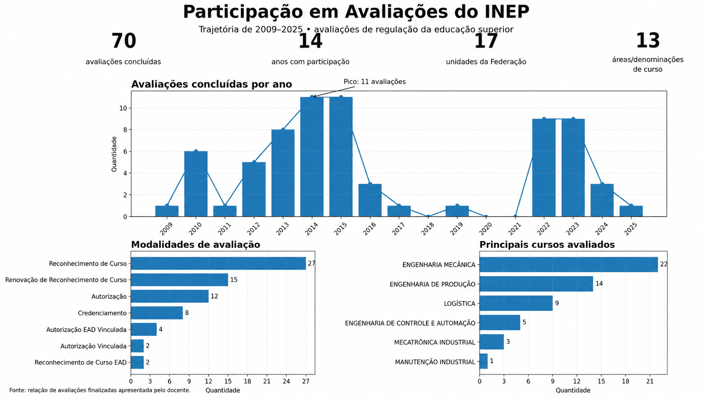
Ao consolidar-se na UFPel, a opção profissional foi clara: dedicar a maior parte da energia acadêmica à graduação. Ainda assim, a consultoria técnica junto à Refinaria Rio Grandense e à Termasa, ao longo de dois anos, funcionou como "reciclagem profissional" — atualizando o contato entre teoria e prática de chão de fábrica.
Essa mesma postura técnica remonta ao início de carreira, quando integrou equipes que desenvolveram sistemas e protótipos computacionais.
Entre 2012 e 2013, integrou o CONSUN — Conselho Universitário da UFPel — como representante suplente da classe dos coordenadores de curso, em alternância com o titular Prof. Luiz Filipe Damé Schuch, representando o Centro de Engenharias.
O impacto de uma trajetória acadêmica não se mede apenas pela soma de disciplinas, orientações ou publicações — mas pelo que essas atividades produziram em formação, transformação institucional e abertura de oportunidades.
A candidatura à classe de Professor Titular não encerra uma trajetória — aumenta a responsabilidade de contribuir com mais maturidade, experiência e generosidade institucional. Gratidão pelas oportunidades recebidas; responsabilidade por seguir produzindo efeitos.
Alejandro Martins Rodriguez · SIAPE 1806731 · Pelotas, junho de 2026